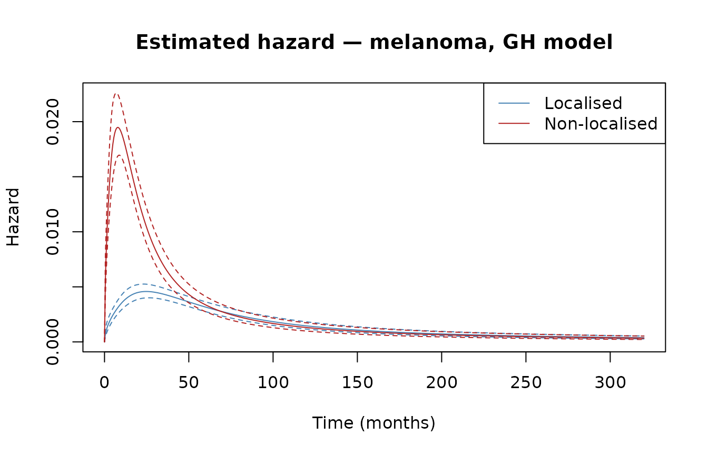
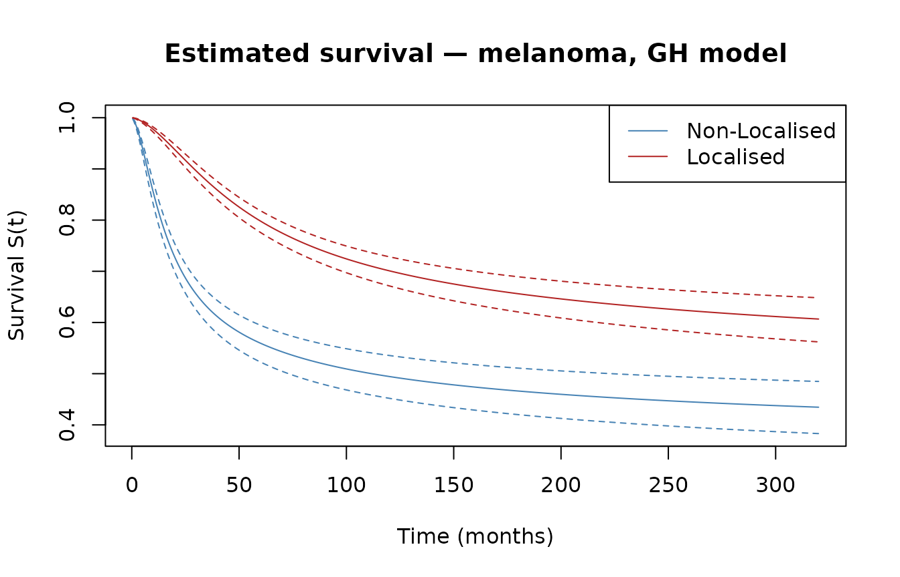
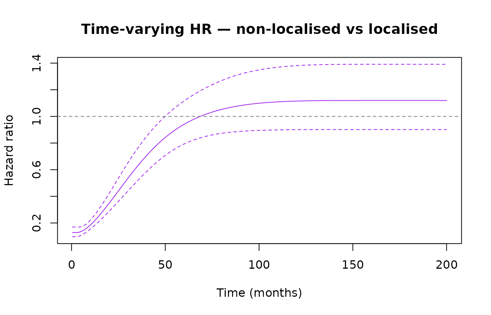
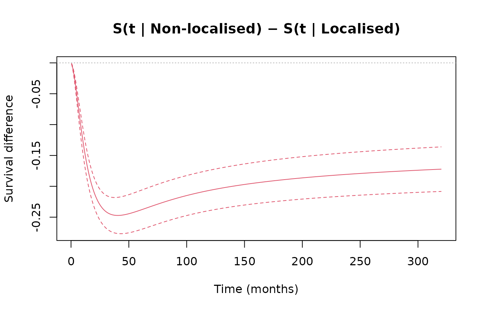
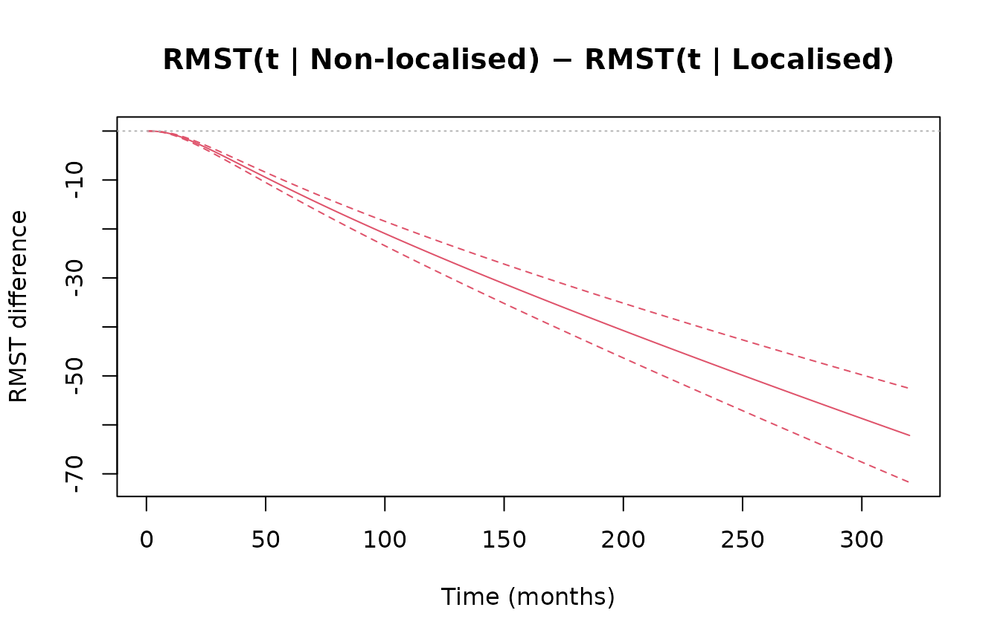
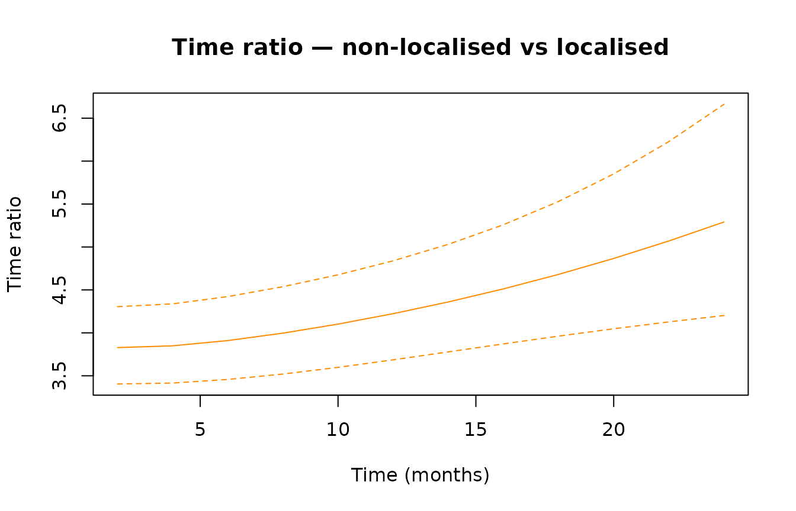
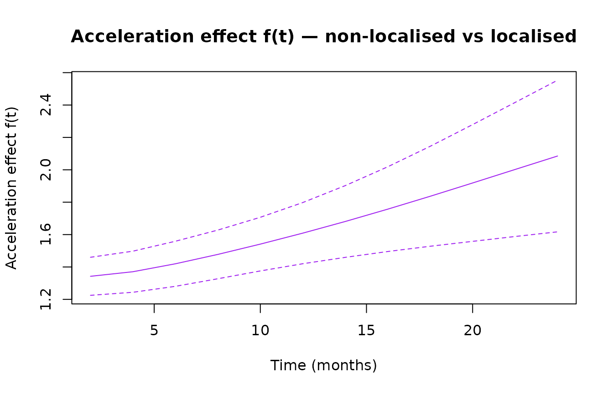

Introduction
In survival analysis, covariate effects are typically modelled through one of two mechanisms: a multiplicative effect on the hazard (proportional hazards, PH) or a multiplicative effect on time (accelerated failure time, AFT). Generalized hazard (GH) models combine both simultaneously:
This nests PH (), AFT (), and additive hazards (AH, ) as special cases. A key advantage: combining the time-acceleration parameter and the hazard-scaling parameter can capture time-varying hazard ratios with only two parameters per covariate.
genhaz fits penalised cubic restricted spline GH models
on the log-time scale, with the smoothing parameter selected
automatically by minimising a modified likelihood cross-validation (LCV)
criterion.
Model types
The model_type argument selects the sub-model per
covariate:
model_type |
Constraint | Interpretation |
|---|---|---|
"GH" |
none | Full generalised hazard |
"PH" |
Proportional hazards | |
"AFT" |
Accelerated failure time | |
"AH" |
Additive hazards |
Mixed models are supported via a vector,
e.g. model_type = c("PH", "GH") for two covariates.
Censoring types
Surv call |
Censoring | Internal type |
|---|---|---|
Surv(time, event) |
Right-censoring | "rc" |
Surv(start, stop, event) |
Left-truncation + right-censoring | "lt_rc" |
Surv(t1, t2, type="interval2") |
Interval censoring | "ic" |
Note: only rc is tested at this point in time.
Real-data example: melanoma survival
We use the biostat3::melanoma dataset: 7,775 patients
with melanoma cancer, including age group, period of diagnosis, sex,
cancer stage, survival time in months, and a death indicator. The
question of interest is the effect of non-localised stage on survival,
adjusted for age, period, and sex.
Fitting the model
The full model fit takes approximately 9 minutes and is not re-run here. The code below shows exactly what was run to produce the stored result:
fit_melanoma <- fit_genhaz(
Surv(mel$time, mel$event), ~ X + period + agegrp + sex,
data = mel,
model_type = "GH",
profile = TRUE,
n_knots = 8,
tol_LCV = 0.001,
lcv_method = "optimize"
)
library(biostat3)
mel <- biostat3::melanoma
mel$X <- ifelse(mel$stage == "Localised", 0, 1)
mel$period <- ifelse(mel$year8594 == "Diagnosed 75-84", 0, 1)
new_time <- seq(0.5, 320, by = 0.5) # avoids t = 0 (needed for time_ratio)
nd_mel <- data.frame(
X = c(1L, 0L),
period = c(1L, 1L),
agegrp = factor(c("60-74", "60-74"), levels = levels(mel$agegrp)),
sex = factor(c("Male", "Male"), levels = levels(mel$sex))
)
rownames(nd_mel) <- c("Non-Localised", "Localised")Results
print(fit_melanoma)
#> Fitted generalized hazard model (genhaz)
#>
#> Model type : GH
#> Knots : 8 (log-time scale)
#> Lambda : 5970
#> EDF : 15.80
#> AIC : 24261.08
#>
#> Covariate coefficients:
#> Estimate Std.Err z Pr(>|z|)
#> beta1_X 1.14275 0.08566 13.340 < 2e-16 ***
#> beta1_period -0.07113 0.07634 -0.932 0.35150
#> beta1_agegrp45-59 0.07644 0.10202 0.749 0.45371
#> beta1_agegrp60-74 0.11169 0.10021 1.115 0.26504
#> beta1_agegrp75+ 0.29734 0.11902 2.498 0.01248 *
#> beta1_sexFemale -0.11502 0.07384 -1.558 0.11933
#> beta2_X 0.30549 0.06955 4.392 1.12e-05 ***
#> beta2_period -0.30543 0.06549 -4.664 3.11e-06 ***
#> beta2_agegrp45-59 0.24573 0.08370 2.936 0.00333 **
#> beta2_agegrp60-74 0.53765 0.08208 6.551 5.73e-11 ***
#> beta2_agegrp75+ 0.82835 0.09971 8.307 < 2e-16 ***
#> beta2_sexFemale -0.42383 0.06093 -6.956 3.51e-12 ***
#> ---
#> Signif. codes: 0 '***' 0.001 '**' 0.01 '*' 0.05 '.' 0.1 ' ' 1
#>
#> Exponentiated estimates (95% CI):
#> exp(Est) lower .95 upper .95
#> beta1_X 3.1354 2.6508 3.7086
#> beta1_period 0.9313 0.8019 1.0817
#> beta1_agegrp45-59 1.0794 0.8838 1.3184
#> beta1_agegrp60-74 1.1182 0.9188 1.3608
#> beta1_agegrp75+ 1.3463 1.0662 1.7000
#> beta1_sexFemale 0.8913 0.7712 1.0302
#> beta2_X 1.3573 1.1843 1.5555
#> beta2_period 0.7368 0.6481 0.8377
#> beta2_agegrp45-59 1.2786 1.0851 1.5065
#> beta2_agegrp60-74 1.7120 1.4576 2.0108
#> beta2_agegrp75+ 2.2895 1.8831 2.7837
#> beta2_sexFemale 0.6545 0.5809 0.7376
summary(fit_melanoma)
#> Fitted generalized hazard model (genhaz)
#>
#> Formula : ~X + period + agegrp + sex
#> Model type : GH
#> Knots : 8 (log-time scale)
#> Lambda : 5970
#> EDF : 15.80
#> AIC : 24261.08
#>
#> Covariate coefficients:
#> Estimate Std.Err z Pr(>|z|)
#> beta1_X 1.14275 0.08566 13.340 < 2e-16 ***
#> beta1_period -0.07113 0.07634 -0.932 0.35150
#> beta1_agegrp45-59 0.07644 0.10202 0.749 0.45371
#> beta1_agegrp60-74 0.11169 0.10021 1.115 0.26504
#> beta1_agegrp75+ 0.29734 0.11902 2.498 0.01248 *
#> beta1_sexFemale -0.11502 0.07384 -1.558 0.11933
#> beta2_X 0.30549 0.06955 4.392 1.12e-05 ***
#> beta2_period -0.30543 0.06549 -4.664 3.11e-06 ***
#> beta2_agegrp45-59 0.24573 0.08370 2.936 0.00333 **
#> beta2_agegrp60-74 0.53765 0.08208 6.551 5.73e-11 ***
#> beta2_agegrp75+ 0.82835 0.09971 8.307 < 2e-16 ***
#> beta2_sexFemale -0.42383 0.06093 -6.956 3.51e-12 ***
#> ---
#> Signif. codes: 0 '***' 0.001 '**' 0.01 '*' 0.05 '.' 0.1 ' ' 1
#>
#> Exponentiated estimates (95% CI):
#> exp(Est) lower .95 upper .95
#> beta1_X 3.1354 2.6508 3.7086
#> beta1_period 0.9313 0.8019 1.0817
#> beta1_agegrp45-59 1.0794 0.8838 1.3184
#> beta1_agegrp60-74 1.1182 0.9188 1.3608
#> beta1_agegrp75+ 1.3463 1.0662 1.7000
#> beta1_sexFemale 0.8913 0.7712 1.0302
#> beta2_X 1.3573 1.1843 1.5555
#> beta2_period 0.7368 0.6481 0.8377
#> beta2_agegrp45-59 1.2786 1.0851 1.5065
#> beta2_agegrp60-74 1.7120 1.4576 2.0108
#> beta2_agegrp75+ 2.2895 1.8831 2.7837
#> beta2_sexFemale 0.6545 0.5809 0.7376Patients with non-localised disease progress through the baseline hazard times faster and face a times higher hazard at every time point. Wald CIs for each:
Hazard and survival curves
plot() dispatches on the fitted model, calls
predict() internally, and sets ylim from the
full CI range so confidence bands are never clipped. Evaluated at age
group 60–74, male sex, diagnosed 1985–94.
plot(fit_melanoma, newdata = nd_mel, times = new_time, type = "hazard",
interval = "confidence", col = c("steelblue", "firebrick"),
xlab = "Time (months)", main = "Estimated hazard — melanoma, GH model")
plot(fit_melanoma, newdata = nd_mel, times = new_time, type = "survival",
interval = "confidence", col = c("steelblue", "firebrick"),
xlab = "Time (months)", main = "Estimated survival — melanoma, GH model")
Time-varying hazard ratio
type = "hazard_ratio" gives
(exposed over baseline) with a log-scale delta-method CI. Under PH this
would be flat; the GH model captures the time variation.
plot() works directly on the predict()
result.
hr_mel <- predict(fit_melanoma, newdata = nd_mel,
times = seq(0.5, 200, by = 0.5), type = "hazard_ratio",
interval = "confidence")
plot(hr_mel, col = "purple",
xlab = "Time (months)",
main = "Time-varying HR — non-localised vs localised")
abline(h = 1, lty = 2, col = "grey50")
With only two parameters for the stage effect, the GH model captures the time-varying hazard ratio: high at diagnosis, levelling off after approximately 6 years.
Survival difference and RMST
type = "surv_diff" gives
(exposed minus baseline) on the linear scale; the delta-method accounts
for the correlation between the two curves.
type = "rmst_diff" integrates this difference up to each
restriction time
via 25-point Gauss-Legendre quadrature.
diff_s_mel <- predict(fit_melanoma, newdata = nd_mel,
times = new_time, type = "surv_diff",
interval = "confidence")
plot(diff_s_mel,
xlab = "Time (months)",
main = "S(t | Non-localised) − S(t | Localised)")
abline(h = 0, lty = 3, col = "grey70")
rmst_mel <- predict(fit_melanoma, newdata = nd_mel,
times = new_time, type = "rmst_diff",
interval = "confidence")
plot(rmst_mel,
xlab = "Time (months)",
main = "RMST(t | Non-localised) − RMST(t | Localised)")
abline(h = 0, lty = 3, col = "grey70")
Time ratio
type = "time_ratio" gives
where
(the relation
):
the baseline time
at which the localised (baseline, group 0, row 2) group reaches the
survival level the non-localised (exposed, group 1, row 1) group has at
time
.
The non-localised group fares worse, so the localised group needs
longer to fall that far, giving
.
Each
is found via uniroot; the delta-method CI uses the implicit
function theorem. The search is capped at the model support
exp(max(fit$knots)) (tau_max); the localised
baseline survival plateaus above the non-localised level, so beyond an
early window no
exists (returned NA) — we therefore use an in-support
grid.
tr_mel <- predict(fit_melanoma, newdata = nd_mel,
times = seq(2, 24, by = 2), type = "time_ratio",
interval = "confidence")
plot(tr_mel, col = "darkorange",
xlab = "Time (months)", main = "Time ratio — non-localised vs localised")
abline(h = 1, lty = 2, col = "grey50")
Acceleration factor
type = "acc_factor" reports the time-varying
acceleration effect on the log scale,
the time-varying analogue of
:
it is defined so that
i.e. the warped time is
with instantaneous rate
,
and
in the constant-AFT limit. So
is directly comparable to the fitted
(here
).
The delta-method CI uses the implicit function theorem together with the
hazard time-derivative post(..., "dh_dt"); the same support
cap applies, so we use the in-support grid.
This is a work in progress.
af_mel <- predict(fit_melanoma, newdata = nd_mel,
times = seq(2, 24, by = 2), type = "acc_factor",
interval = "confidence")
plot(af_mel, col = "purple",
xlab = "Time (months)", main = "Acceleration effect f(t) — non-localised vs localised")
abline(h = fit_melanoma$par["beta1_X"], lty = 2, col = "grey50") # constant-AFT beta1
Simulation and benchmarking
sim_scenario() generates right-censored survival data
from one of three named scenarios with mixture-Weibull baseline hazards
(bathtub, hump-shaped, early peak). mixWeibSc() evaluates
the corresponding true
,
,
and
on a grid for comparison with fitted estimates.
set.seed(82359)
dat <- sim_scenario(scenario = 1, beta1 = 0.5, beta2 = 0.5, n = 2000)
head(dat)
#> time X event T_true
#> 1 2.1526916 0 1 2.1526916
#> 2 3.1407413 0 1 3.1407413
#> 3 0.4359473 0 0 1.8678244
#> 4 1.5510083 1 1 1.5510083
#> 5 0.4094107 0 1 0.4094107
#> 6 1.2020419 1 1 1.2020419
fit <- fit_genhaz(
surv = Surv(dat$time, dat$event),
formula = ~ X,
data = dat,
model_type = "GH",
profile = TRUE,
n_knots = 6,
tol_LCV = 0.05,
lcv_method = "optimize"
)
print(fit)
#> Fitted generalized hazard model (genhaz)
#>
#> Model type : GH
#> Knots : 6 (log-time scale)
#> Lambda : 287.4
#> EDF : 6.91
#> AIC : 3521.11
#>
#> Covariate coefficients:
#> Estimate Std.Err z Pr(>|z|)
#> beta1_X 0.45585 0.04649 9.806 < 2e-16 ***
#> beta2_X 0.61353 0.11273 5.442 5.26e-08 ***
#> ---
#> Signif. codes: 0 '***' 0.001 '**' 0.01 '*' 0.05 '.' 0.1 ' ' 1
#>
#> Exponentiated estimates (95% CI):
#> exp(Est) lower .95 upper .95
#> beta1_X 1.5775 1.4401 1.7280
#> beta2_X 1.8469 1.4808 2.3036Inference
confint() gives Wald CIs for the parameters; with
diff = TRUE it returns a CI for
(accounting for their covariance).
confint(fit, "beta1_X")
#> 2.5 % 97.5 %
#> beta1_X 0.3647416 0.5469618
confint(fit, "beta2_X")
#> 2.5 % 97.5 %
#> beta2_X 0.3925786 0.8344796
confint(fit, c("beta1_X", "beta2_X"), diff = TRUE)
#> 2.5 % 97.5 %
#> beta1_X - beta2_X -0.4629392 0.1475844Fit a restricted (PH) model and test against the full GH model:
fit_ph <- fit_genhaz(
surv = Surv(dat$time, dat$event),
formula = ~ X,
data = dat,
model_type = "PH",
profile = TRUE,
n_knots = 6,
tol_LCV = 0.05,
lcv_method = "optimize"
)
anova(fit_ph, fit)
#> Analysis of Deviance Table (likelihood ratio tests)
#>
#> Model 1: ~X, PH
#> Model 2: ~X, GH
#> Df LogLik Chisq Chi Df Pr(>Chisq)
#> Model 1 7 -1790.4
#> Model 2 8 -1756.6 67.608 1 < 2.2e-16 ***
#> ---
#> Signif. codes: 0 '***' 0.001 '**' 0.01 '*' 0.05 '.' 0.1 ' ' 1Smoothing-parameter selection
The smoothing parameter
is chosen by minimising the modified LCV criterion. Three strategies are
available via lcv_method:
lcv_method |
Method | Notes |
|---|---|---|
"full" (default) |
Root-find on full LCV gradient (third-derivative correction) | Most accurate |
"approx" |
Root-find on first-order LCV gradient | Faster |
"optimize" |
Direct optimize() on LCV, no gradient |
Gradient-free |
# First-order gradient (faster)
fit <- fit_genhaz(..., profile = TRUE, lcv_method = "approx")
# Pure optimisation (no gradient)
fit <- fit_genhaz(..., profile = TRUE, lcv_method = "optimize")